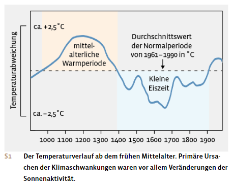
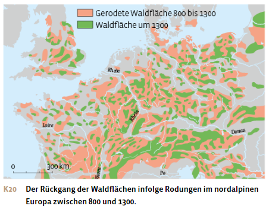
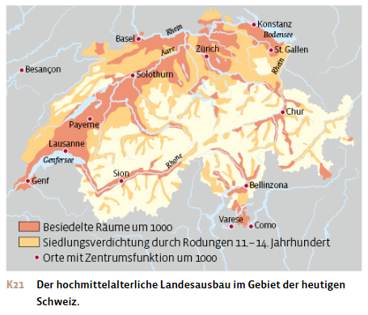
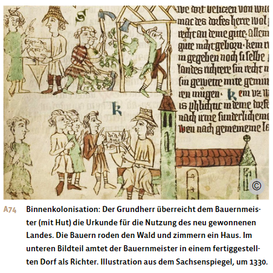
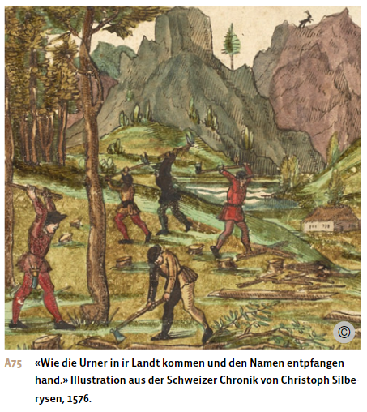
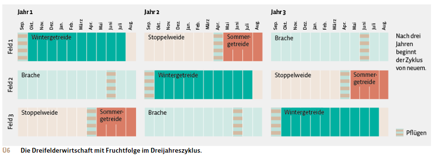
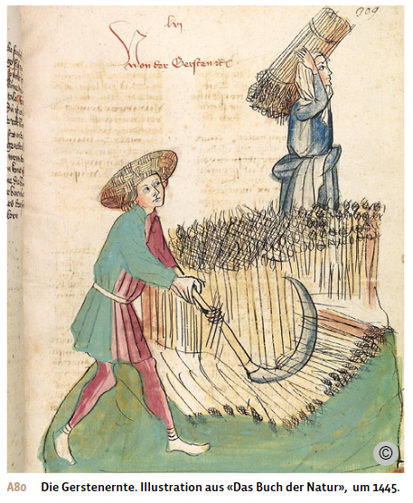
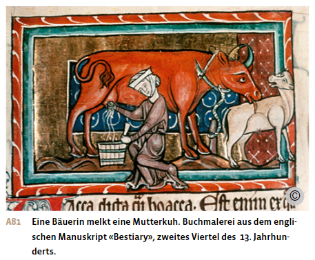
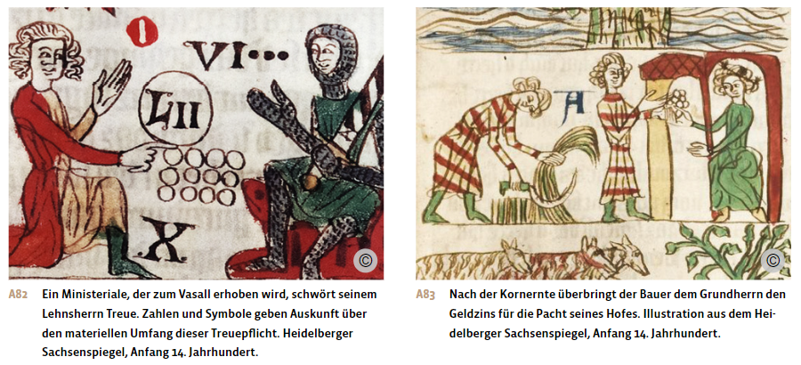
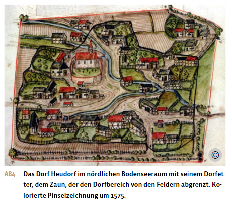

Materialdossier: Hochmittelalter – Dorf
Vollständiger Inhalt des Unterrichtsdossiers · Mittelalter_Hochmittelalter_Dorf.docx
Das Mittelalter: Hochmittelalter – Dorf (Stadt, Handel)
Ausweitung der landwirtschaftlichen Produktion im Hochmittelalter
Bevölkerungswachstum und Landesausbau
Die Zahl der in Europa lebenden Menschen nahm im Laufe des Mittelalters stark zu, obwohl es immer wieder zu schweren Hungersnöten mit hoher Sterblichkeit kam. Bereits zwischen 600 und 1000 hatte sich die Bevölkerung in den meisten Gebieten West- und Mitteleuropas verdoppelt.
Danach beschleunigte sich dieses Wachstum vielerorts noch einmal – am stärksten in Frankreich, wo sich die Bevölkerungszahl bis um 1340 mehr als verdreifachte. In Südeuropa und Polen verlief diese Entwicklung weniger ausgeprägt. Dies gilt auch für das Gebiet der heutigen Schweiz. Hier nahm die Bevölkerung von der Jahrtausendwende bis um 1300 von knapp 500’000 auf 700’000 bis 850’000 Personen zu.
Um die wachsende Bevölkerung zu ernähren, wurde Wald gerodet und Land urbar gemacht. Auf diese Weise erschlossen die Menschen neue landwirtschaftliche Nutzflächen, also Äcker, Wiesen und Weiden, und neue Siedlungsräume. Dieser Landesausbau, auch Binnenkolonisation genannt, begann bereits im 7. und 8. Jahrhundert und erreichte seinen Höhepunkt mit dem wachsenden Bevölkerungsdruck im 12. und 13. Jahrhundert.


Erschliessung neuer Agrarflächen
Ausgehend von den bestehenden Siedlungsgebieten wurden im Rahmen des Landesausbaus grossflächig Wälder gerodet wie auch Sumpf- und Schwemmlandschaften entwässert und Küstenzonen mit Deichen vor der Überflutung geschützt. Auf dem so gewonnenen Land legten die Menschen neue Höfe mit Äckern, Wiesen und Weiden an, erweiterten bestehende Siedlungen und gründeten neue. Mit hohem Arbeitsaufwand wurden auch Böden kultiviert, die bisher für die Landwirtschaft als ungeeignet galten: Man begann, Trockenzonen intensiver zu nutzen, und drang auch in höhergelegene Gebirgsregionen vor. Diese Binnenkolonisation führte überall in Europa zu einer starken Ausdehnung des besiedelten und bewirtschafteten Gebiets. Für Frankreich wird der Zugewinn an landwirtschaftlicher Nutzfläche zwischen dem 10. und 13. Jahrhundert auf 25 bis 50 Prozent geschätzt.
Der Landesausbau wurde durch die Veränderung der klimatischen Bedingungen begünstigt. Zwischen 950 und 1250 stieg die Jahresdurchschnittstemperatur leicht an, die Sommer wurden trockener und die Winter milder. Dadurch verbesserten sich die Ernteerträge, und die Menschen konnten Gemüse, Obst und Wein bis weit in den Norden und in höhere Gebirgslagen anbauen. In Schottland und in den Voralpen gediehen neu Weinreben, in den Alpen konnte Getreide bis auf 1500 Meter Höhe angebaut werden.


Landesausbau im Gebiet der heutigen Schweiz
Auch auf dem Gebiet der heutigen Schweiz fand ein Landesausbau statt: Durch Rodung von Wäldern und Kultivierung ertragsarmer Böden konnte die landwirtschaftliche Nutzfläche im schweizerischen Mittelland um schätzungsweise ein Viertel bis ein Drittel erweitert werden. Bestehende Ortschaften wurden vergrössert und neue Siedlungen gegründet. Flurnamen wie «Schwand», «Rüti» oder «Brand» zeugen noch heute von dieser hochmittelalterlichen Rodungstätigkeit. «Schwand» leitet sich vom Begriff «schwenden» ab. Bei dieser Rodungsmethode wird die Baumrinde in einem Streifen rund um den Stamm entfernt, damit der Baum abstirbt. Das Wort «Rüti» kommt von «roden». Auf der Suche nach neuem Land drangen die Menschen auch in hügelige und gebirgige Zonen vor, wo der karge Boden nur eine Besiedlung mit Einzelhöfen oder Weilern erlaubte. Besonders stark besiedelt wurden die waldreichen Voralpengebiete im Appenzell, in der Zentralschweiz, im Napfgebiet und im Gruyère sowie der Jura.
Gut erforscht ist die Wanderungsbewegung der deutschsprachigen Walser. Diese alemannische Volksgruppe war im 9. Jahrhundert aus dem Berner Oberland in das Gomser Hochtal im Oberwallis eingewandert. Von dort aus erschlossen sie zwischen dem 12. und 14. Jahrhundert raue Hochlagen im nördlichen und südlichen Alpenraum, die bis anhin unbesiedelt waren. Dabei spezialisierten sich die Walserfamilien vor allem auf die Vieh- und Alpwirtschaft. Über den gesamten Alpenraum verteilt existieren heute noch rund 150 Walsersiedlungen, darunter Juf im bündnerischen Averstal, das mit 2126 Metern über Meer das höchstgelegene ganzjährig bewohnte Dorf der Schweiz ist. Viele Walsersiedlungen sind heute allerdings nur noch im Sommer bewohnt.
Sonderrechte für Rodung und Neubesiedlung
Der Landesausbau war oft ein von der Obrigkeit gesteuerter Prozess: Landes- und Grundherren versprachen sich von der Erschliessung und Besiedlung neuen Landes eine Ausweitung ihrer Macht und neue Einkünfte. Um rodungswillige bäuerliche Gruppen zu finden, lockten sie mit sogenannter Rodungsfreiheit. Sie boten ihnen grössere persönliche Freiheiten, umfangreiches Land mit günstigen Nutzungsbedingungen und Selbstverwaltungsrechte an. Oft durften die Neuankömmlinge das von ihnen gerodete Land an ihre Nachkommen vererben oder bekamen es sogar als Eigentum übertragen. Im Gegenzug mussten die Siedlerfamilien Abgaben leisten, die aber relativ niedrig und vertraglich festgelegt waren. Zudem fielen die beschwerlichen Frondienste weg, die die Bauern sonst ihren Grundherren zu leisten hatten. Stattdessen kamen manchmal Kriegsdienstverpflichtungen hinzu.
Am umfangreichsten waren diese Sonderrechte in den neu besiedelten nord- und ostdeutschen Gebieten sowie an der Küste Flanderns und in Südwestfrankreich. In einigen Gebieten, etwa im norddeutschen Friesland oder in der Innerschweiz, organisierten sich rodungsfreie Bauernfamilien auch genossenschaftlich, um ihre Gemeinde selbst zu verwalten.
Als Anerkennung für die Erschliessung von Alpengebieten erhielten sowohl die Walsergemeinden als auch die innerschweizerischen Siedlergruppen grundherrschaftliche Sonderrechte. Sie durften das von ihnen urbar gemachte Land weitgehend frei nutzen und vererben, sodass es mit der Zeit in ihr Eigentum überging. Die Walserfamilien genossen zudem Ortsfreizügigkeit, das heisst, sie konnten ihre Siedlung dauerhaft verlassen. Den Ammann, der die niedere Gerichtsbarkeit ausübte, durften sie frei wählen. Im Gegenzug mussten die Walser ihren Territorialherren Kriegsdienst leisten.
Mächtige Adelsgeschlechter wie die Staufer oder die Zähringer in Südwestdeutschland vergaben solche Sonderrechte auch an Rodungs- und Siedlerfamilien, um ihre territoriale Herrschaft auszubauen. Indem sie freie Bauern ansiedelten, beschnitten sie die grundherrliche Macht bereits bestehender feudaler Zwischeninstanzen wie Niederadel oder Klöster.

Doch nicht jeder Landesausbau führte auch zu grösserer bäuerlicher Freiheit. Viele ritterliche Kleinadlige, die rund um ihre Burgen Landesausbau betrieben, gewährten den bäuerlichen Untertanen, die sie für die Urbarmachung einsetzten, oft keine Sonderrechte. Vielmehr beanspruchten sie das gerodete Land als Eigengut für sich und ihre Familie. Damit versuchten sie nicht nur, ihre grundherrschaftliche Macht über Land und Leute auszubauen, sondern auch, das neu erschlossene Land der landesherrlichen Kontrolle zu entziehen.
Als die hochmittelalterliche Ausbauphase um 1400 zu Ende ging, hatte sich die europäische Landschaft tiefgreifend verändert. Wo zuvor vielerorts noch dünn besiedelte Landstriche mit ausgedehnten Wald- und Sumpfflächen bestanden hatten, gab es nun intensiv genutzte und dicht bewohnte Kulturlandschaften. Die Abholzung grosser Waldflächen veränderte auch den Wasserhaushalt des Bodens. In einigen Gebieten sank der Grundwasserspiegel, was in trockenen Sommern zu Wassermangel und damit zu Missernten führte. Starke Regenfälle wiederum beschleunigten die Erosion des fruchtbaren Humus in den nun entwaldeten Gebieten. Zudem führten die Rodungen zu einer Verknappung von Bau- und Brennholz sowie von Nahrungsmitteln aus dem Wald.
Fortschritte in der Landwirtschaftstechnik
Intensivierung des Ackerbaus – die Dreifelderwirtschaft
Im Hochmittelalter verbreitete sich ein neues System der landwirtschaftlichen Bodennutzung, die Dreifelderwirtschaft. Sie beruhte auf einem dreijährigen Fruchtfolgesystem: Wintersaat, Sommersaat und Brache. Dabei wurde abwechselnd ein Drittel des Bodens mit Wintergetreide – je nach Region Weizen, Emmer, Dinkel oder Roggen – und ein weiteres Drittel mit Sommerfrucht – meist Hafer oder Gerste – bebaut. Das letzte Drittel lag für ein Jahr brach. Es wurde nur gepflügt und blieb unbebaut, damit sich der Boden durch Mineralisation erholen konnte. Das auf der Brache wachsende Unkraut diente dem Vieh als karge Weide. Nach der Getreideernte im Sommer frass das Vieh auch die auf den Feldern verbliebenen Stoppeln. Seine Exkremente düngten den Boden.
Die Dreifelderwirtschaft setzte sich zunächst in den Getreideanbaugebieten Nordfrankreichs, der Niederlande und Westdeutschlands durch und wurde bald in ganz Europa zur vorherrschenden Form der Ackernutzung.
Das neue Fruchtfolgesystem verbesserte die Fruchtbarkeit der Böden. Auch die Anbaufläche konnte gegenüber der bisher üblichen Zweifelderwirtschaft um ein Sechstel vergrössert werden. Statt der Hälfte lag nur noch ein Drittel des Bodens brach. Dadurch konnten die Erträge um bis zu 50 Prozent gesteigert werden.
Die Dreifelderwirtschaft ermöglichte es den Bauersleuten auch, die Feldarbeit gleichmässiger über das Jahr zu verteilen: Das Wintergetreide wurde im Herbst gesät und war daher etwas früher reif, während die Aussaat der Sommerfrucht im Frühjahr und die Ernte im Spätsommer erfolgte. Die Brache konnte gepflügt werden, wenn keine anderen Arbeiten drängten. Schliesslich verringerten die unterschiedlichen Aussaat- und Wachstumsphasen die Gefahr von Hungersnöten. So konnten die Folgen einer schlechten Ernte beim Wintergetreide durch einen guten Ertrag beim Sommergetreide gemildert werden.
Die Anfänge der Dreifelderwirtschaft reichen bis in die Karolingerzeit zurück. So verpflichtete beispielsweise das Kloster St.Gallen im Jahre 763 einen Bauern dazu, auf dem Salland eines Fronhofes dreimal auf unterschiedlichen Flächen zu pflügen – einmal für das Wintergetreide, einmal für die Sommersaat und einmal für die Brache. Das Fruchtfolgesystem auf drei Feldern wurde auf Klostergrund also schon früh praktiziert. Generell spielten Klöster und Ordensgemeinschaften, insbesondere die Zisterzienser, eine wichtige Rolle bei der Verbreitung neuer landwirtschaftlicher Methoden.

Vergetreidung und Alpwirtschaft
Mit der Einführung der Dreifelderwirtschaft ging im Flachland eine Ausweitung der Getreideanbauflächen einher. Im Gegenzug gingen die Weideflächen für das Vieh und die Anbauflächen für Hülsenfrüchte, Flachs, Kohl, Rüben, Wein oder Obst zurück. Diese verstärkte Ausrichtung der Landwirtschaft auf die Getreideproduktion wird als Vergetreidung bezeichnet.
Durch die Ausdehnung des Ackerlandes und die Zunahme der bäuerlichen Betriebe verringerten sich im 13. Jahrhundert die Flächen für die Allmendweiden und die für die Schweinemast wichtigen Wälder. Damit verlor die Viehwirtschaft im Flachland an Bedeutung. Es wurden nur noch wenige Ochsen, Kühe und Pferde als Zugtiere für Pflug und Wagen gehalten. Dazu kam noch etwas Kleinvieh für die Selbstversorgung der Bauernfamilien mit Fleisch, Milch, Wolle und Eiern. Wegen des Futtermangels für die Überwinterung musste im Herbst immer ein Teil des Viehs geschlachtet werden.
Mit dem Rückgang der Viehzucht in den Getreideanbaugebieten fehlte auch der tierische Dünger, um die dem Boden entzogenen Nährstoffe zu ersetzen. Die mittelalterliche Landwirtschaft litt unter chronischem Düngermangel. Zu Beginn des 14. Jahrhunderts stagnierten deshalb die Getreideerträge in den dicht besiedelten Regionen Europas, wo keine neuen Flächen für den Kornanbau mehr erschlossen werden konnten.
In den hügeligen und gebirgigen Zonen dagegen betrieb die Bevölkerung weiterhin eine auf Selbstversorgung ausgerichtete Mischwirtschaft mit Ackerbau und Milchverarbeitung. Das Getreide wurde auf kleinen gartenähnlichen Parzellen angebaut. Das Vieh weidete über den Sommer auf hoch gelegenen Alpweiden, damit die Bauersleute die Wiesen in den tieferen Lagen mähen und so Heuvorräte für den Winter anlegen konnten. Es wurde vor allem Kleinvieh wie Ziegen und Schafe gehalten. An verkehrsgünstigen Lagen kamen auch Maultiere, Pferde und Ochsen für den Saumbetrieb hinzu. Der zunehmende Warentransport über die Pässe eröffnete der Bergbevölkerung neue Einkommensquellen.


Wandel der Grundherrschaft
Die Fronhofwirtschaft zerfällt
Um 1100 vollzog sich ein grundlegender Wandel in der Grundherrschaft. Die adligen Grundherren begannen, ihre Eigenwirtschaft, die sie bisher mit Leibeigenen und bäuerlicher Fronarbeit betrieben hatten, stark einzuschränken oder ganz aufzugeben.
In dieser Zeit verstärkten sich die Marktbeziehungen, und die Geldwirtschaft kam auf. Die Selbstversorgung der herrschaftlichen Haushalte verlor an Bedeutung, da diese sich auf den wachsenden Märkten versorgen konnten. Zudem stiessen die Grundherren zunehmend auf Widerstand, wenn sie ihre Bauersleute zu drückenden Frondiensten auf den Herrenhöfen zwingen wollten. Von diesen wanderten nicht wenige in die aufblühenden Städte ab oder engagierten sich beim Landesausbau, wo günstige Pachtbedingungen lockten.
Viele Grundherren gingen deshalb zu einer Rentengrundherrschaft über, das heisst, sie verpachteten den Fronhof samt Land an Bauernfamilien und verlangten dafür Renten, also Naturalabgaben oder zunehmend auch Geldleistungen. Dabei separierten sich die adligen Grundherren von der bäuerlichen Bevölkerung. Sie zogen auf Burgen und pflegten dort einen ritterlichen Lebensstil.
Die Auflösung der grundherrschaftlichen Eigenwirtschaft vollzog sich auf unterschiedliche Weise. Nicht selten ging der Fronhof als Ganzes an den Verwalter des herrschaftlichen Gutes, den Meier, über. Dieser konnte den ihm verliehenen Fronhof auf eigene Rechnung bewirtschaften, musste dafür aber einen Pachtzins an den Grundherrn entrichten oder eine bestimmte Getreidemenge abliefern. In anderen Fällen teilte der Grundherr sein Salland in mehrere Bauerngüter auf, die er einzeln an Bauernfamilien verpachtete, sodass der Fronhof verschwand. Durch die Verpachtung gegen feste Geldzinsen oder Naturalabgaben vereinfachte der Grundherr nicht nur seine Verwaltung, sondern stabilisierte auch seine Einkünfte. Das Risiko schwankender landwirtschaftlicher Erträge trug fortan der Pächter. Umgekehrt profitierte dieser bei überdurchschnittlichen Erträgen.
Die Aufsplitterung der Grundherrschaft
Parallel zur Auflösung des Fronhofsystems kam es zu einer Zunahme kleiner Grundherrschaften und zu einer Aufsplitterung der Grundherrschaft in Einzelrechte.
Im alten Fronhofsystem hatte ein Grundherr noch alle Hoheitsrechte über sein Land und seine Untertanen bei sich vereint. Er war nicht nur Grundeigentümer, sondern übte auch öffentlich-rechtliche Befugnisse wie die Polizeigewalt, die Gerichtsbarkeit und die Schirmherrschaft über die Kirche aus. So konnte der Grundherr Frondienste einfordern, Steuern und Abgaben erheben, Recht sprechen oder Einfluss auf die Pfarrerwahl nehmen.
Als die Grundherren ihre Eigenwirtschaft auflösten, verpachteten viele nicht bloss ihr Land, sondern vergaben auch Hoheitsrechte. Gegen zusätzliche Abgaben erhielt zum Beispiel der Meier, der den Fronhof pachtete, auch die niedere Gerichtsbarkeit im Bauerndorf übertragen. Oder Grundherren nahmen bei reichen Städtern einen Kredit auf und verpfändeten ihnen dafür einen Teil ihres Landes als Sicherheit. Der städtische Kreditgeber erhielt dann die bäuerlichen Abgaben als Zins und wenn der Grundherr den Kredit nicht mehr zurückzahlen konnte, gingen die grundherrlichen Rechte an den Städter. So war es bald keine Ausnahme mehr, wenn die einzelnen Land- und Hoheitsrechte in einem Dorf von verschiedenen Rechtsinhabern ausgeübt wurden. Die Grundherrschaft splitterte sich immer mehr in Einzelrechte auf.
Die Zahl der kleinen Grundherrschaften nahm auch deshalb zu, weil nun eine neue Personengruppe mit kleinen Herrschaftsrechten ausgestattet wurde: die Ministerialen. Diese waren, wie die Meier, ursprünglich unfreie Dienstleute, die für hochrangige Adlige und geistliche Grundherren Hof-, Verwaltungs- und Kriegsdienste leisteten. Als Gegenleistung für treue Dienste wurden Ministerialen von ihren Herren nun zunehmend zu Vasallen erhoben und mit einem kleinen, vererbbaren Lehen ausgestattet, wie einer Grundherrschaft oder einem Steuerrecht. Auf diese Weise gelang den Ministerialen der soziale und politische Aufstieg zu einem eigenen Geburtsstand, der sich im Übergang zum Spätmittelalter mit dem niederen Adel vermischte.

Grössere Handlungsspielräume für die Landbevölkerung
Die zunehmende Auflösung des Fronhofsystems und die damit verbundene Zersplitterung der grundherrlichen Rechte eröffneten der ländlichen Bevölkerung grössere Handlungsspielräume und neue wirtschaftliche und rechtliche Perspektiven. Wenn die Grundherren ihre Eigenwirtschaften auflösten, fielen in der Regel auch die Frondienste weg und wurden durch Abgaben ersetzt. Dadurch konnten die Bauern ihre Arbeitskraft auf den eigenen Betrieb konzentrieren, was höhere Erträge versprach. Allfällige Ernteüberschüsse konnten sie auf dem Markt absetzen. Mit dem so erwirtschafteten Gewinn konnten sie sich weitere Erleichterungen von ihren Grundherren erkaufen, wie die Entlassung aus der Leibeigenschaft oder das Recht, den gepachteten Hof an die Nachkommen zu vererben.
Viele Grundherren sahen sich auch zu Zugeständnissen gezwungen, um die Abwanderung unzufriedener Bauersleute in die Stadt oder in neue Rodungsgebiete zu verhindern. So wurden mancherorts umstrittene Abgaben reduziert oder ganz abgeschafft, etwa die Gebühr, die bei der Heirat oder beim Tod eines Hörigen anfiel.
Die bäuerliche Bevölkerung erlangte dadurch bessere Besitzrechte, mehr persönliche Freiheiten und Rechtssicherheit. Die grundherrschaftlichen Abgaben wurden berechenbarer, etwa wenn Ernteanteile in fixe Geldrenten umgewandelt wurden. Der personenrechtliche Status verlor im Laufe des Spätmittelalters an Bedeutung: Leibeigene, Hörige und freie Bauern verschmolzen zu einem einzigen Bauernstand, der allerdings wirtschaftlich und sozial grosse Unterschiede aufwies.
Die Bildung von Dorfgemeinschaften
Im Zuge des Bevölkerungswachstums verdichteten sich die bestehenden Siedlungen. Benachbarte Weiler und Höfe schlossen sich zu Dörfern zusammen.
Ein Dorf umfasste meist zehn bis zwanzig Bauernhöfe mit insgesamt 50 bis 100 Personen. Wohlen im heutigen Kanton Aargau galt im 12. Jahrhundert mit über 66 Haushalten bereits als Grossdorf. Die einzelnen Höfe verfügten über ein Wohnhaus, Wirtschaftsgebäude und einen Garten; sie waren durch Hecken, Zäune oder Gräben voneinander abgetrennt. Ein dichter Zaun, der Etter, umschloss das Dorf als Ganzes. Er schützte Mensch und Tier vor Eindringlingen und grenzte gleichzeitig den innerdörflichen Rechtsbereich von der landwirtschaftlichen Nutzfläche ab, in der die Ackerparzellen der einzelnen Bauernfamilien lagen und die dem Flurrecht unterstand. Der gemeinschaftliche Besitz des Dorfes, die Allmende, umfasste Weiden, Wald, Ödlandflächen und Gewässer. Die Allmende durfte von allen Mitgliedern des Dorfverbandes genutzt werden, beispielsweise als Viehweide. Die Wege und Strassen wurden gemeinsam unterhalten.
Die dörfliche Siedlungsweise setzte sich vor allem im Flachland sowie in den inneralpinen Hochtälern und in den Südalpen durch. In den Hügelzonen, zum Beispiel im Jura, und in den Voralpen dominierten dagegen weiterhin die Einzelhofsiedlungen. Aber auch hier schlossen sich die Bauern häufig zusammen und bildeten eine Talgenossenschaft, die ähnlich wie ein Dorf funktionierte.
Innerhalb der bäuerlichen Dorfgemeinschaft bildete sich eine klare Hierarchie heraus. Zur schmalen Oberschicht gehörte der Meier. Als Verwalter im Dienst der Grundherrschaft übte er eine Aufsichtsfunktion über die bäuerlichen Pächter aus. Oder er bewirtschaftete den ehemaligen Fronhof als Grosspächter. Er gehörte zu den Reichsten im Dorf und genoss hohes gesellschaftliches Ansehen. Oft nahm er auch politische Aufgaben wahr. Unter ihm rangierten die Vollbauernfamilien, die «Hufner» oder «Huber». Sie verfügten über grossen Grundbesitz, Zugtiere für Pflug und Wagen sowie schwere Geräte. Damit grenzten sie sich wirtschaftlich und sozial von den kleineren Bauernhöfen ab, die mit ihrer Anbaufläche von einer halben Hufe gerade noch eine Familie ernähren konnten. Sie wurden als Halbbauern oder «Schuppisser» bezeichnet. Zuunterst in der dörflichen Hierarchie standen die klein- und unterbäuerlichen Schichten: die Familien der Viertelbauern, «Kleinhäusler» oder «Tauner». Sie besassen nur ein Häuschen und ein wenig Land, das zur Selbstversorgung nicht ausreichte. Deshalb mussten sie sich im Taglohn bei den grösseren Bauern verdingen oder mit Heimarbeit etwas dazuverdienen. Krisenzeiten bedeuteten für die Taunerfamilien Hunger und Not.

Bäuerliche Selbstverwaltung
Die Auflösung der Fronwirtschaft ermöglichte es der bäuerlichen Bevölkerung, ihre wirtschaftliche Tätigkeit unabhängiger vom Grundherrn zu gestalten. Ihr Bezugspunkt verlagerte sich allmählich auf die Dorfgemeinde und die Talschaft, und die Bauersleute begannen die Zusammenarbeit und das Zusammenleben durch Absprachen untereinander zu regeln. Im Laufe der Zeit bildeten sich eigene Dorfrechte, Dorfgerichte und weitere Selbstverwaltungsorgane heraus.
Im Alpenraum entwickelte sich die bäuerliche Selbstverwaltung bereits während der Besiedlungsphase. Ohne gemeinsame Absprachen und enge Zusammenarbeit wäre es kaum möglich gewesen, neue Nutzflächen zu roden und zu pflegen, Alpweiden zu erschliessen, Wege anzulegen, Wasserleitungen zu verlegen oder Schutzbauten zu errichten. Auch der Zugang zu den Alpweiden musste geregelt werden, um sie vor Übernutzung zu schützen.
In den Ackerbaugebieten wuchs der Bedarf an Zusammenarbeit vor allem durch die Zersplitterung der grundherrlichen Rechte und durch die Einführung der Dreifelderwirtschaft. Bei der Dreifelderwirtschaft wurden die Parzellen der einzelnen Höfe zu drei grossen Feldern, den sogenannten Zelgen, zusammengefasst, die gemeinsam bewirtschaftet wurden. Da innerhalb der Zelgen kein Wegenetz die bäuerlichen Privatfelder erschloss – man wollte den wertvollen Ackerboden nicht schmälern –, musste die Dorfbevölkerung die anfallenden Feldarbeiten eng koordinieren. Dies geschah durch den Flurzwang, eine für alle verbindliche Nutzungsordnung, die von der Obrigkeit, dem Grundherrn, rechtlich abgesichert wurde. Der Flurzwang schrieb den Ablauf und die Produkte der Dreifelderwirtschaft vor, regelte die Zeiten fürs Pflügen, Säen, Einhegen und Ernten und legte die Wege- und Weiderechte fest. Ein einzelner Bauer durfte nicht ausscheren. Diese Ordnung diente einerseits dazu, Nutzungskonflikte zwischen den Bauern möglichst zu vermeiden oder gegebenenfalls zu sanktionieren, andererseits hatte sie das Ziel, die Erträge zu optimieren und damit die Versorgung zu sichern.
Da die Grundherren nach Aufgabe ihrer Eigenwirtschaft meist nicht mehr selbst vor Ort waren, übernahm die bäuerliche Dorfgemeinschaft die Durchsetzung des Flurzwangs in eigener Regie. Bald gingen auch andere grundherrschaftlichen Aufsicht- und Ordnungsaufgaben auf die Dorfgemeinschaft über. Dazu gehörten die Instandhaltung von Wegen und Brücken, die Organisation der Bewässerung und Brunnennutzung, der Hochwasser- und Brandschutz oder der Erlass von Regeln für die Nutzung der Allmende. Von der Dorfversammlung gewählte Hirten und Bannwarte beaufsichtigten und schützten Vieh, Feld und Wald.
Zunehmend nahmen Dorfbewohner auch als Geschworene Einsitz im dörflichen Niedergericht. In dieser Funktion urteilten sie über Alltagsdelikte wie Flur- und Waldfrevel, Ehrverletzungen und kleinere Betrügereien; sie verhandelten aber auch Klagen über Eigentumsrechte und Geldschulden. Die Grundherren behielten sich oft nur noch das Recht vor, den Ortsvorsteher und den Vorsitzenden des Dorfgerichts zu ernennen. Aber auch hier erlangte der Dorfverband im Laufe der Zeit Mitwirkungsrechte.
Das Dorfrecht
Die Regeln des bäuerlichen Wirtschaftens und des dörflichen Zusammenlebens wurden in Dorfordnungen zusammengefasst. Diese entstanden unter Mitwirkung des Dorfverbands und mit Zustimmung der Grundherrschaft. Die Dorfordnung löste mit der Zeit die Regelungen ab, die im Fronhofsystem die Beziehungen zwischen Bauersleuten und Grundherrschaft bestimmt hatten. Grössere Dörfer begannen im ausgehenden Mittelalter, ihre bis dahin nur mündlich überlieferte Dorfordnung in Urkunden schriftlich festzuhalten.
Wer im Besitz eines Hofs war und im Dorf wohnte, besass das Dorfrecht und übernahm damit alle Rechte und Pflichten, die in der örtlichen Dorfordnung festgelegt waren. Zugezogene mussten sich ins Dorfrecht einkaufen. Das Dorfrecht wurde mit dem Hof vererbt und bei der Hofteilung aufgeteilt. Bei Wegzug ging es verloren und musste bei der Rückkehr erneuert werden. Nur wer das Dorfrecht besass, durfte an der Gemeindeversammlung mitbestimmen und in die Dorfämter gewählt werden.
Frauen und Kinder sowie Knechte und Mägde unterstanden nicht dem Dorfrecht, sondern dem Hausrecht. Der Haushaltsvorstand war ihr Vormund und damit haftbar, wenn sie gegen dörfliche Regeln verstiessen, Schaden anrichteten oder Schulden machten.
Mit der Herausbildung des Dorfrechts und der zunehmenden Selbstverwaltung entwickelte sich die Dorfgemeinschaft zu einem immer selbstständigeren Rechts- und Wirtschaftsverband. Die Zersplitterung der Grundherrschaft schwächte den herrschaftlichen Zugriff auf die Bauernfamilien noch zusätzlich. Nicht selten entwickelte sich der bäuerliche Dorf- oder Talverband sogar zu einem aktiven Gegenspieler der Grundherren, insbesondere dann, wenn die Bauern das bisher von ihnen gegen Abgaben genutzte Ackerland in ihr Eigentum überführen wollten.
Aus: Notz, Thomas; Frey, Walter (Hg.): Geschichte fürs Gymnasium. Steinzeit bis 1450. Bern 2024, S. 311-320.